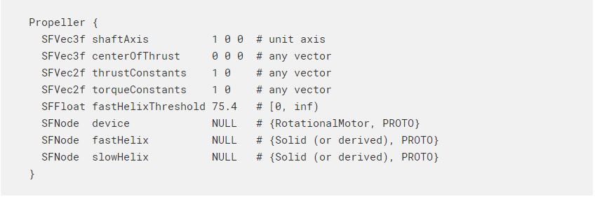
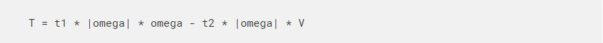

Webots tutorial 翻譯內容 <<
Previous Next >> RotationalMotor
Propeller
螺旋槳

Description 描述
The Propeller node can be used to model a marine or an aircraft propeller. When its device field is set with a RotationalMotor, the propeller turns the motor angular velocity into a thrust and a (resistant) torque. The resultant thrust is the product of a real number T by the unit length shaft axis vector defined in the shaftAxis field, with T given by the formula:
螺旋槳節點可用於對海軍陸戰隊或飛機螺旋槳建模。 當其設備字段設置為RotationalMotor時，螺旋槳會將電動機角速度轉換為推力和（阻力）轉矩。 合成推力是實數T與shaftAxis字段中定義的單位長度軸軸線矢量的乘積，其中T由下式給出：

Where t1 and t2 are the constants specified in the thrustConstants field, omega is the motor angular velocity and V is the component of the linear velocity of the center of thrust along the shaft axis. The thrust is applied at the point specified within the centerOfThrust field. The resultant torque is the product of a real number Q by the unit length shaft axis vector, with Q given by the formula:
其中t1和t2是推力常數字段中指定的常數，ω是電動機角速度，V是推力中心沿軸心的線速度的分量。 推力施加在centerOfThrust字段內指定的點上。 合成轉矩是實數Q與單位長度軸軸線矢量的乘積，Q由下式給出：

Where q1 and q2 are the constants specified in the torqueConstants field.
其中q1和q2是torqueConstants字段中指定的常數。
The above formulae are based on "Guidance and Control of Ocean Vehicles" from Thor I. Fossen and "Helicopter Performance, Stability, and Control" from Raymond W. Prouty.
以上公式基於Thor I. Fossen的“海洋車輛的指導和控制”和Raymond W. Prouty的“直升機性能，穩定性和控制”。
Theexample"propeller.wbt"locatedinthe "projects/samples/devices/worlds" directory of Webots shows three different helicopters modeled with Propeller nodes.
位於Webots的“ projects / samples / devices / worlds”目錄中的示例“ propeller.wbt”顯示了用Propeller節點建模的三種不同的直升機。
Field Summary 領域摘要
- shaftAxis: defines the axis along which the resultant thrust and torque will be exerted, see this figure.
- shaftAxis：定義將沿其施加合成推力和扭矩的軸線，請參見此圖
- centerOfThrust: defines the point where the generated thrust applies, see this figure.
- centerOfThrust：定義生成的推力施加的點，請參見此圖。
- thrustConstantsand torqueConstants: coefficients used to define the resultant thrust and torque as functions of the motor angular velocity and the linear speed of adavance, see above formulae.
- 推力常數和轉矩常數：用於定義合成推力和轉矩作為電動機角速度和直線速度的函數的係數，請參見上式。
- fastHelixThreshold: threshold in [rad/s]from which the helix representation is switched from slowHelix tofastHelix. The default value equals to 24π [rad/s].
- fastHelixThreshold：閾值，以[rad / s]為單位，從該閾值將螺旋表示形式從slowHelix切換到fastHelix。 默認值等於24π[rad / s]。
- device: this field has to be set with a RotationalMotorin order to control the propeller.
- 設備：必須使用RotationalMotor設置此字段才能控制螺旋槳。
- fastHelixand slowHelix: if not NULL, these fields must be set with Solid The corresponding Solid nodes define the graphical representation of the propeller according to its motor's angular velocity omega: if |omega| >fastHelixThreshold, only the Solid defined in fastHelix is visible, otherwise only the Solid defined in slowHelix is visibler.
- fastHelix和slowHelix：如果不為NULL，則必須使用實體節點設置這些字段。 相應的實體節點根據螺旋槳的電動機角速度ω定義螺旋槳的圖形表示：if | omega | >fastHelixThreshold，僅在fastHelix中定義的實體可見，否則僅在slowHelix中定義的實體可見。
Webots tutorial 翻譯內容 <<
Previous Next >> RotationalMotor